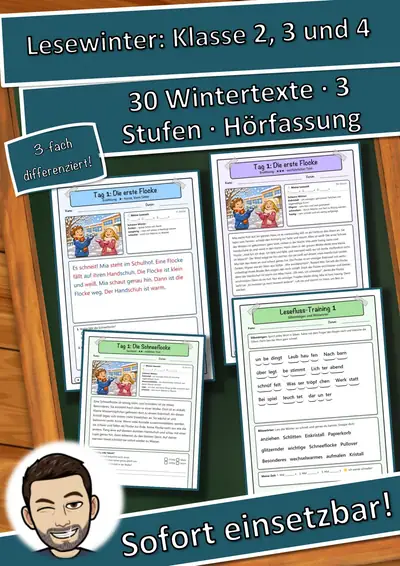
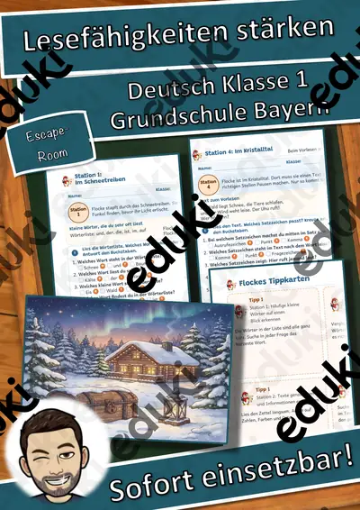

Lesewinter Klasse 3: 10 Wintertexte in 3 Stufen – tägliche Lesezeit, Lesefluss-Training, Tandem-Lesen, Hörfassung
Jeden Tag ein Text, jeden Tag ein Stück flüssiger lesen: Lesewinter Klasse 3 ist deine fertige Lesezeit-Routine für die kalte Jahreszeit. 10 eigene Wintertexte (Erzählungen und Sachtexte), jeder Text in 3 Stufen – ★ kurze, klare Fassung · ★★ mittlerer Text · ★★★ ausführlicher Text. Alle Kinder lesen dasselbe Thema, jedes Kind seine Fassung.
Pro Text: Bild, Text in 3 Stufen, „Schwere Wörter“ mit Erklärung, Zeitfeld für drei Leserunden und Aufgaben nach AFB I–III (Ankreuzen, Richtig/Falsch, W-Frage, Nachdenkfrage). Die Aufgaben wachsen mit der Stufe.
Die 10 Texte:
Die Schneeflocke (Sachtext)2. Wo ist mein Schlitten? (Erzaehlung)3. Das Futterhaus (Erzaehlung)4. Winterschlaf, Winterruhe, Winterstarre (Sachtext)5. Herr Knolle trägt Schal (Erzaehlung)6. Yara liest das Rezept (Erzaehlung)7. Warum Teiche von oben zufrieren (Sachtext)8. Spuren im Schnee (Erzaehlung)9. Ein Licht für Herrn Lindqvist (Erzaehlung)10. Das Zwiebelprinzip (Sachtext)Inhalt (40 Seiten):
- Übersicht für Kinder: So geht deine Lesezeit, Stufen, Inhaltsverzeichnis, Hörfassung per QR-Code
- Lehrkraftseite mit Einsatzplan für 20 Tage (4 Wochen, 10–15 Minuten pro Tag), Stufenzuweisung und Varianten
- Lesefluss-Training: Silbenbögen, Blitzwörter, Lesetreppe, Lesestreifen, Zeitmessung (Wörter pro Minute)
- Tandem-Lese-Protokoll mit Rückmeldebogen
- 30 Textseiten (10 Texte × 3 Stufen) mit Bild, schweren Wörtern, Zeitfeld und Aufgaben
- Lese-Tagebuch, Ich-kann-Check und Urkunde „Lesewinter-Profi“
- Lösungen mit Musterantworten zu allen Aufgaben
- Hörfassung per QR-Code: alle 10 Texte zum Mitlesen
Einsatz: Deutsch Klasse 3 (Leseflüssigkeit, Leseverstehen), tägliche Lesezeit, Freiarbeit, Wochenplan, Förderunterricht, DaZ, Vertretungsstunde, Winter- und Adventszeit. Ausdrucken und loslegen.
Teil der Reihe „Lesewinter“ (Klasse 2, 3 und 4) – alle drei Bände im Materialpaket günstiger: einmal zahlen.
Texte, Aufgaben und Layout eigene Erstellung. Texte mit KI-Unterstützung erstellt und geprüft. Illustrationen KI-erzeugt und bearbeitet, keine Fotos, keine realen Personen, keine Marken. Hörfassung per Sprachsynthese.
Viel Freude beim Lesen wünscht Snice! :)
Ähnliche Materialien

Lesewinter Klasse 2: 10 Wintertexte in 3 Stufen – tägliche Lesezeit, Lesefluss-Training, Tandem-Lesen, Hörfassung

Lesewinter Materialpaket Klasse 2, 3 und 4: 30 Wintertexte in je 3 Stufen – tägliche Lesezeit, Lesefluss-Training, Hörfassung (einmal zahlen)

Lesespaziergang Laternenzeit: Linas Laterne – 8 Stationen in 3 Lesestufen mit Hörfassung (Klasse 1–2, DaZ)

Lesespaziergang Nikolausabend: Stiefel, Sterne, Plätzchenduft – 8 Stationen in 3 Lesestufen mit Hörfassung (Klasse 1–2, DaZ)

Lesespaziergang Tiere im Winter: Pit, der Igel, sucht ein Bett – 8 Stationen in 3 Lesestufen mit Hörfassung (Klasse 1–2, DaZ)

Escape-Room Lesefähigkeiten stärken – Deutsch Klasse 1 Grundschule: 6 Stationen, 2 Schlösser

Sport und Ernährung – Energie fürs Training – Lesespurgeschichte mit Rätselaufgaben (Klasse 9)